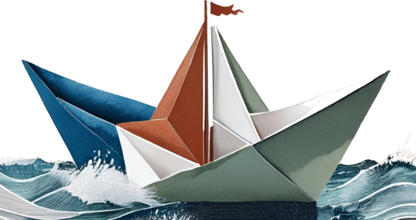
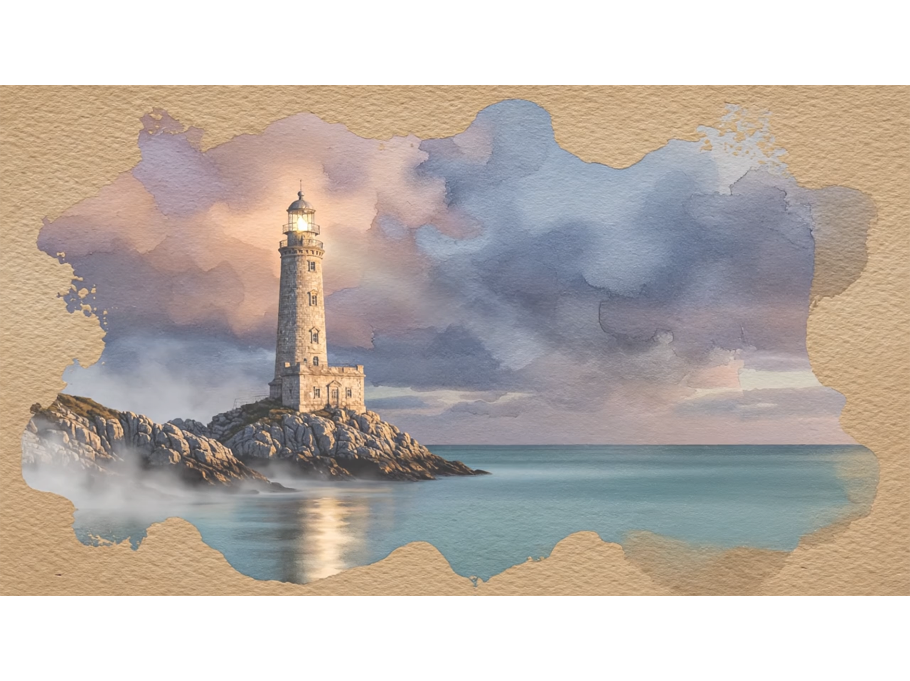

Where am I today?
Drag the marker along the water to show where you are right now. There's no right answer — just a moment of noticing.

What do you notice right now?
Three small invitations. Write a word, a phrase, or nothing at all.
Tap below to keep this moment. You can come back to it any time.
My sea
Three places your nervous system might travel through. Add what's true for you — your signs, your tells, your patterns.
↑
Rough water hyper-arousal
When the system is mobilised — too much energy, too fast, too loud inside.
▾
Sometimes the waves get high. The body braces, thoughts speed up, the door for soothing feels far away. You might notice…
In my body
In my thoughts
In my behaviour
~
Smooth sailing your window
Where you feel here — able to feel, think, respond, and rest.
▾
In your window there's space. You can be moved without being swept away. You might notice…
In my body
In my thoughts
In my behaviour
↓
Still water hypo-arousal
When the system has dialled itself down — collapse, fog, distance.
▾
Sometimes the wind drops and the sea goes flat. Things feel far away. You might notice…
In my body
In my thoughts
In my behaviour
The fawn response
Pete Walker named a fourth shape of survival — fawn. Less “I'll fight, flee or freeze,” more “I'll keep you happy so I'm safe.” For many neurodivergent people it's the most familiar mode, often invisible until it's named. Tick anything that feels familiar.
My sails
What fills your sails, and what takes the wind out? Add anything — a person, a practice, a time of day, a kind of weather. And notice the surprises: what looks restful can drain you, and what looks like effort can fill you back up.
What fills your sails
The things that give you energy, lift and momentum. Press enter (or comma) to add.
What takes the wind out
The things that drain or stall you. No judgement — just naming.
The lighthouse
One lighthouse, standing through every weather. At the top, the lamp is lit and the beam reaches out — open, here, connected. In the middle, the seas rise and the wind gets up — stirred, energy looking for somewhere to go. At the bottom, the fog rolls in and the light dims — quiet, far away. The lighthouse doesn't move; only the weather does. Drag the marker up toward the light or down to the rocks to show where you are today — hover each point to see what it means.

In the light
safe · connected · socialWhat people, places or practices help you feel safe and connected?
Out in the storm
mobilised · fight · flightWhat stirs this up for you? What small things help you settle?
Lost in the fog
shutdown · collapse · freezeWhat tends to pull you into the quiet? What helps you gently come back?
My log
A quiet record of moments you've kept. Patterns might emerge over weeks — and they might not. Both are useful.
A snapshot to take to a session — opens in your email, you choose what to send and to whom.